Decision Trees: Learning to Ask the Right Questions
DCS 404 · Data Science and Machine Learning
Every model so far has been an equation. Linear regression drew a line, logistic regression bent that line into a probability — but under the hood it was always weights times features, and explaining a prediction meant talking about coefficients.
Today's model doesn't compute; it asks questions. Is the glucose level above 127? Is the petal shorter than 2.5 cm? Each answer narrows things down, exactly like a game of twenty questions, until the model is confident enough to commit to an answer. The result is a decision tree — a flowchart learned from data, and the first model in this course that a domain expert can read top-to-bottom and audit without knowing any mathematics.
That readability comes at a price, and the price is the theme of this module: decision trees are chronically prone to overfitting. Left alone, a tree will keep asking ever-pickier questions until it has memorized every quirk of the training set — the tree-shaped version of the degree-14 polynomial from the Regularization module. So after building trees up (how they choose questions, how to grow one in scikit-learn), we spend the second half reining them in: early stopping, its failure mode, and pruning. We close by finishing the evaluation toolkit we started last module — multiclass metrics, ROC curves, and AUC.
How to work through this
The usual rhythm: run every code cell (Shift + Enter), study the output, then read the commentary.
Cells build on each other, so if something errors, run from the top.
The module is in three acts:
- Sections 1–4 build the machinery: what a tree is, how it measures the "quality" of a question (impurity), the growing algorithm, and trees in scikit-learn on the iris dataset.
- Sections 5–8 are the drama: watching a tree overfit a small noisy dataset, then two rescue strategies — early stopping (and the XOR problem that defeats it) and cost-complexity pruning.
- Sections 9–10 zoom out: the classic tree-building algorithms (ID3, C4.5, CART), and the missing pieces of classifier evaluation — multiclass F1 averaging, the ROC curve, and AUC — demonstrated on the diabetes dataset from the Logistic Regression module.
Learning objectives
After completing this module you will be able to:
- Describe the anatomy of a decision tree (root, internal nodes, leaves, branches, depth) and trace a prediction through one by hand.
- Compute Gini impurity and entropy for a class distribution, and information gain for a split; explain why gain ratio corrects information gain's bias.
- Fit a
DecisionTreeClassifier, visualize the fitted tree and its axis-aligned decision boundary, and interpret the information in each node. - Demonstrate why fully grown trees overfit, using train/test accuracy gaps and decision-surface complexity.
- Apply the three main early-stopping controls (
max_depth,min_impurity_decrease,min_samples_split) and explain, via the XOR problem, why early stopping can fail. - Explain and apply cost-complexity pruning: the \(\alpha\) trade-off,
cost_complexity_pruning_path, and choosing the final tree with Occam's razor. - Compare the classic tree inducers — ID3, C4.5, CART — and state which one scikit-learn implements.
- Evaluate multiclass classifiers with macro / weighted / micro F1, and binary classifiers with precision–recall curves, ROC curves, and AUC.
Setup
Run this once. Libraries, the usual plotting style, and the diabetes dataset (which returns for the ROC-curve finale in Section 10).
from pathlib import Path
import numpy as np
import pandas as pd
import matplotlib.pyplot as plt
import seaborn as sns
from sklearn.datasets import make_classification, load_iris
from sklearn.tree import DecisionTreeClassifier, plot_tree
from sklearn.linear_model import LogisticRegression
from sklearn.preprocessing import StandardScaler
from sklearn.pipeline import make_pipeline
from sklearn.model_selection import train_test_split
from sklearn.inspection import DecisionBoundaryDisplay
from sklearn.metrics import (accuracy_score, confusion_matrix, ConfusionMatrixDisplay,
classification_report, f1_score, roc_auc_score,
RocCurveDisplay, PrecisionRecallDisplay)
# A consistent look for every plot in this notebook
plt.rcParams.update({
"figure.figsize": (7, 4.5),
"figure.dpi": 110,
"axes.grid": True,
"grid.alpha": 0.3,
"axes.spines.top": False,
"axes.spines.right": False,
"font.size": 11,
})
sns.set_palette("deep")
RANDOM_STATE = 12
# Load the Pima Indians Diabetes dataset (used in Section 10)
for candidate in [Path("data/diabetes.csv"),
Path("notebooks/data/diabetes.csv")]:
if candidate.exists():
diabetes = pd.read_csv(candidate)
print(f"Loaded diabetes dataset from: {candidate}")
break
else:
raise FileNotFoundError("Could not find diabetes.csv. Expected it in a data/ folder next to the notebook.")
print(f"Shape: {diabetes.shape[0]} patients, {diabetes.shape[1]} columns")
Loaded diabetes dataset from: data/diabetes.csv
Shape: 768 patients, 9 columns
1. What is a decision tree?
A decision tree solves a complex problem the way people naturally do: divide it into small questions and answer them one at a time. For a given input, the tree estimates the unknown property (the label) through a cascade of simple tests.
Say we want a model that decides whether an animal is a fish. A biologist might reason: does it live in water? If not — done, not a fish. If yes, we can't conclude yet (dolphins live in water too), so we ask a sharper follow-up: can it also live outside water? Each question splits the world into smaller, purer groups:
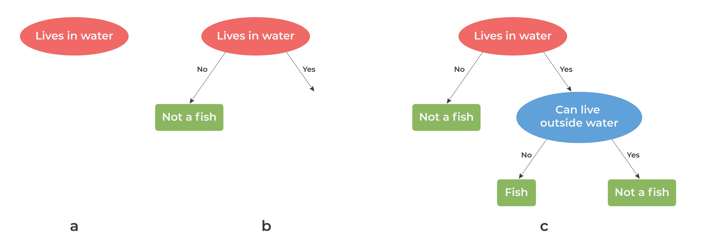
*Figure 1 — Growing a decision tree for fish classification: (a) start with a first test, (b) one answer already gives a verdict, (c) the other answer needs a follow-up test.*The vocabulary, reading Figure 1(c) top to bottom:
- Root node — where the first test happens (Lives in water). Every prediction starts here.
- Internal (decision) nodes — nodes that perform further tests (Can live outside water).
- Leaf (terminal) nodes — the green boxes; no more questions, just a verdict (Fish / Not a fish).
- Branches — the Yes/No arrows; each answer routes the sample down exactly one path.
- Depth — the length of the longest path from root to leaf (here: 2).
Here is a second tree, diagnosing a disease from symptoms — same anatomy, different domain:
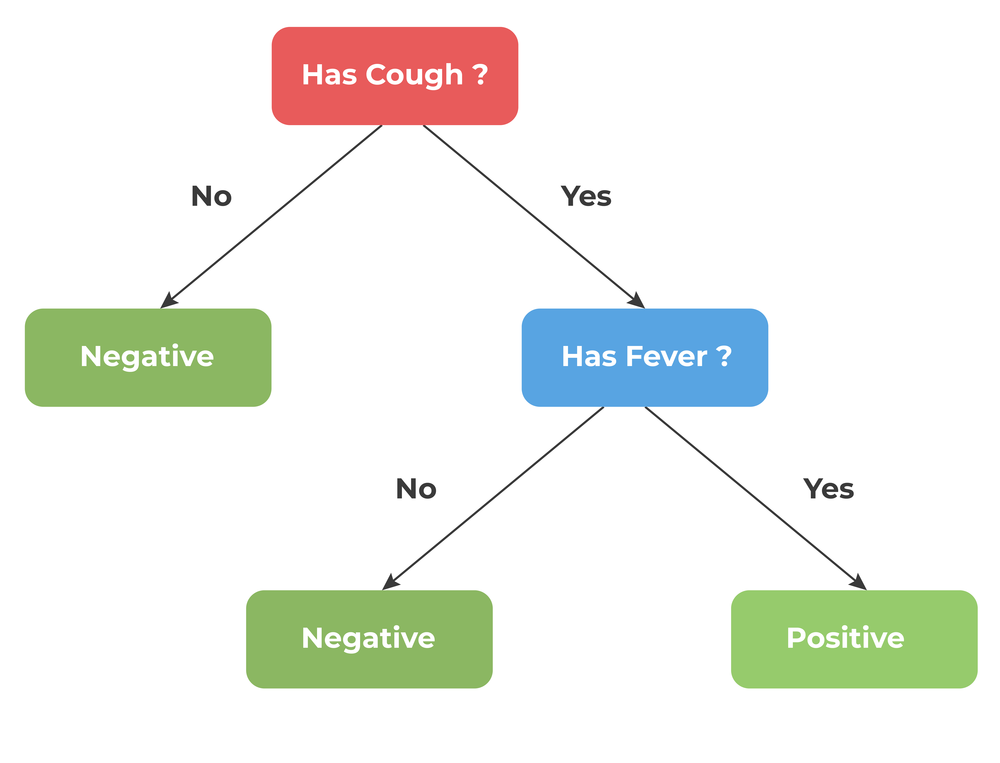
*Figure 2 — A diagnosis tree: two tests route every patient to one of three leaves.*To classify a new sample, you drop it in at the root and follow the answers until it lands in a leaf. That's the entire prediction algorithm — no arithmetic, just routing. The machine-learning question is: given a dataset, which questions should the tree ask, and in what order? That is what the rest of the module answers.
2. Impurity: how a tree scores its questions
A good question is one whose answers separate the classes well. After asking Lives in water?, the "No" group is 100% not-fish — perfectly sorted. A useless question leaves each group as mixed as before. To learn good questions, we need a number that measures "how mixed is this group?" That number is called impurity, and there are two classic recipes.
Gini impurity
The Gini impurity is the probability of misclassifying a randomly chosen sample from a group, if we labelled it randomly according to the group's class proportions:
where \(c\) is the number of classes and \(P_i\) is the fraction of samples belonging to class \(i\). A pure group scores 0; maximum mixing scores highest. Let's code it — three lines:
def compute_gini(class_counts):
"""Gini impurity from a list of per-class sample counts."""
p = np.array(class_counts) / np.sum(class_counts)
return 1 - np.sum(p ** 2)
# Sanity check: a pure node and a 50:50 node
print(f"Gini of [10, 0]: {compute_gini([10, 0]):.3f}")
print(f"Gini of [5, 5]: {compute_gini([5, 5]):.3f}")
Gini of [10, 0]: 0.000
Gini of [5, 5]: 0.500
Now apply it to four different samples of fish-classification data:
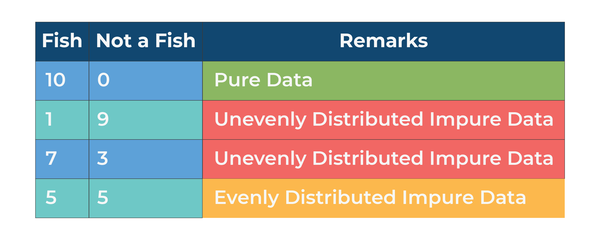
*Figure 3 — Four class distributions, from perfectly pure to perfectly mixed.*class_distributions = [(10, 0), (1, 9), (7, 3), (5, 5)]
for dist in class_distributions:
print(f"Fish = {dist[0]:2d}, Not a fish = {dist[1]} → Gini = {compute_gini(dist):.2f}")
Fish = 10, Not a fish = 0 → Gini = 0.00
Fish = 1, Not a fish = 9 → Gini = 0.18
Fish = 7, Not a fish = 3 → Gini = 0.42
Fish = 5, Not a fish = 5 → Gini = 0.50
Read the pattern: a pure set has zero impurity; impurity peaks when the classes are evenly mixed (0.5 for two classes). In between, the more lopsided the distribution, the lower the impurity. The curve below shows this for every possible class proportion:
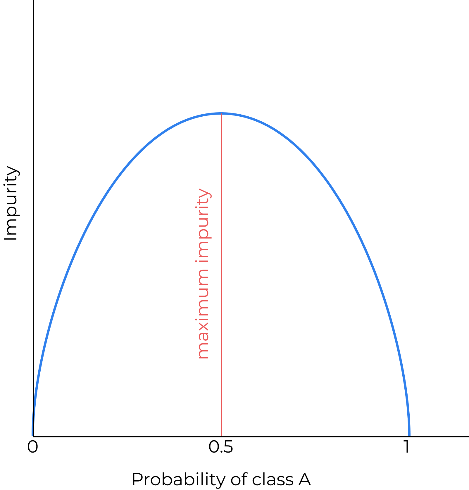
*Figure 4 — Impurity as a function of the class-A proportion: zero at the pure extremes, maximal at 50:50.*Entropy
The second classic impurity measure comes from information theory. Entropy quantifies the disorder in a group:
It behaves like Gini — 0 for pure groups, maximal (1 bit, for two classes) at 50:50 — and in practice the two usually pick the same splits. Gini is marginally cheaper to compute (no logarithm), which is why it is scikit-learn's default.
From impurity to choosing a split: information gain
A split is good if the children are purer than the parent. Information gain makes that precise — it is the impurity drop achieved by a split:
where each child's entropy is weighted by the fraction of samples \(m_k/m\) that flow into it. (The same recipe works with Gini in place of entropy.) The tree evaluates every candidate question and keeps the one with the largest gain.
Let's work one example fully. A tiny loan dataset:
| ID | Is Married | Is House Owner | Will Repay Loan |
|---|---|---|---|
| 1 | false | true | yes |
| 2 | true | true | yes |
| 3 | true | false | no |
| 4 | true | false | yes |
Candidate question: Is House Owner? It sends rows 1–2 (both yes) one way and rows 3–4 (one yes, one no) the other.
def compute_entropy(class_counts):
"""Entropy (bits) from a list of per-class sample counts."""
p = np.array(class_counts) / np.sum(class_counts)
p = p[p > 0] # 0 log 0 = 0, so drop empty classes
return -np.sum(p * np.log2(p)) + 0.0 # +0.0 turns -0.0 into 0.0
# Parent: 3 'yes', 1 'no'
parent = compute_entropy([3, 1])
# Split on 'Is House Owner': owners -> [2 yes, 0 no], non-owners -> [1 yes, 1 no]
owners = compute_entropy([2, 0])
non_owners = compute_entropy([1, 1])
weighted_children = (2/4) * owners + (2/4) * non_owners
print(f"Entropy(parent) = {parent:.3f} bits")
print(f"Entropy(owners) = {owners:.3f} bits")
print(f"Entropy(non-owners) = {non_owners:.3f} bits")
print(f"Weighted child entropy = {weighted_children:.3f} bits")
print(f"Information gain = {parent - weighted_children:.3f} bits")
Entropy(parent) = 0.811 bits
Entropy(owners) = 0.000 bits
Entropy(non-owners) = 1.000 bits
Weighted child entropy = 0.500 bits
Information gain = 0.311 bits
A positive gain: asking about home ownership genuinely sorts the borrowers. The tree would compare this gain against the Is Married split (try it — Exercise 1) and keep the better question.
A flaw, and its fix: gain ratio
Information gain has a bias: it loves attributes with many distinct values. The pathological case is the ID column — splitting on it creates one child per row, every child trivially pure, information gain maximal:
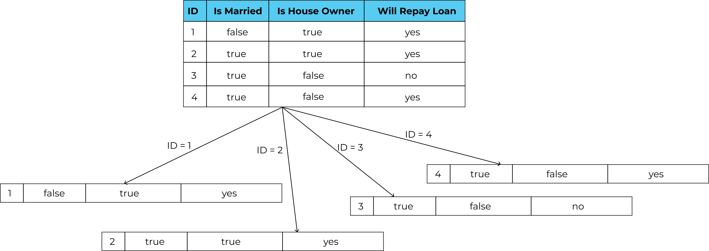
*Figure 5 — Splitting on ID: four "perfectly pure" children, and a model that has learned precisely nothing.*An ID-split generalizes to new data not at all — it's memorization dressed up as purity (a first taste of this module's overfitting theme). The fix is the gain ratio: divide the information gain by the split information — the entropy of the split itself, which is large when a question shatters the data into many small pieces:
Many-way splits pay a large denominator, so the ID column stops looking clever.
Seeing a split chosen
Here is the whole machinery at work on real-looking data. Two candidate splits of the same parent node — a vertical cut on \(x_0\) and a horizontal cut on \(x_1\) — with the class histograms of the resulting children:
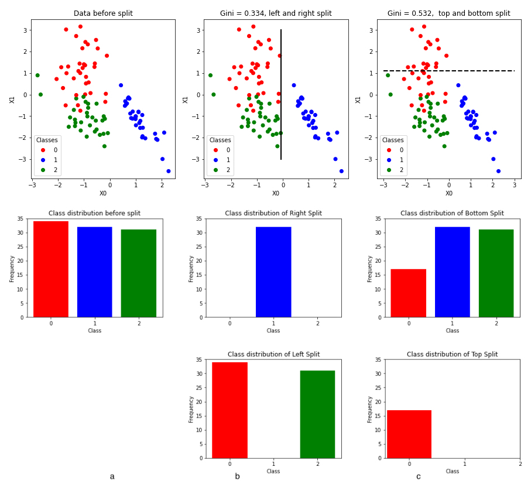
*Figure 6 — (a) the parent node's data, evenly mixed across three classes. (b) A vertical split isolates the blue class perfectly — weighted Gini 0.334. (c) A horizontal split leaves both children mixed — weighted Gini 0.532. The tree picks (b).*One last note: nothing here is classification-specific. For regression trees, swap the impurity metric
for MSE/variance of the target within a node — the machinery is otherwise identical (that is
scikit-learn's DecisionTreeRegressor).
3. The growing algorithm
All the pieces are on the table; the algorithm that assembles them is disarmingly simple — recursive partitioning, greedy at every step:
- Start at the root with the full training set.
- If all samples in the node share one class (the node is pure), or another stopping criterion is met — make it a leaf, labelled with the majority class. Stop.
- Otherwise, evaluate every candidate split (every feature, every threshold), and keep the one with the best impurity reduction.
- Split the data into children accordingly, and recurse into each child (go to 2).
Two properties of this procedure will matter enormously in Section 5:
- It is greedy — it picks the best immediate split, never looking ahead. (Remember this when we hit the XOR problem.)
- With no stopping criterion beyond purity, it doesn't stop until every leaf is pure — even if achieving purity means carving out a leaf for every noisy, mislabelled straggler in the training set.
4. Decision trees in scikit-learn
Scikit-learn implements all of this in DecisionTreeClassifier (and DecisionTreeRegressor for continuous
targets), with the same fit/predict interface as every model so far. We'll use the iris dataset —
150 flowers, 4 measurements (sepal length & width, petal length & width), 3 species (setosa,
versicolor, virginica).
iris = load_iris()
X_ir, y_ir = iris.data, iris.target
X_ir_train, X_ir_test, y_ir_train, y_ir_test = train_test_split(
X_ir, y_ir, test_size=0.2, random_state=42, stratify=y_ir)
tree_iris = DecisionTreeClassifier(max_depth=2, random_state=42)
tree_iris.fit(X_ir_train, y_ir_train)
y_ir_pred = tree_iris.predict(X_ir_test)
print(f"Test accuracy: {accuracy_score(y_ir_test, y_ir_pred):.1%}")
ConfusionMatrixDisplay.from_estimator(tree_iris, X_ir_test, y_ir_test,
display_labels=iris.target_names, cmap="Blues")
plt.title("Iris test set — decision tree (depth 2)")
plt.grid(False)
plt.show()
Test accuracy: 93.3%
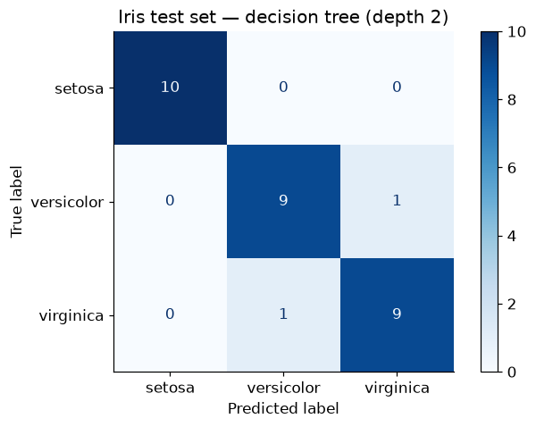
A depth-2 tree — at most two questions per flower — already classifies nearly every test sample. Notice setosa is predicted perfectly: its flowers form a tight, well-separated cluster, so a single question isolates them. The rare confusions are all between versicolor and virginica, whose measurements overlap.
Reading the tree itself
Here is the model's biggest selling point: we can simply draw it and read it. Scikit-learn ships a
plot_tree function.
fig, ax = plt.subplots(figsize=(9, 5), dpi=130)
plot_tree(tree_iris,
feature_names=iris.feature_names,
class_names=iris.target_names,
filled=True, rounded=True, fontsize=9, ax=ax)
ax.grid(False)
plt.show()
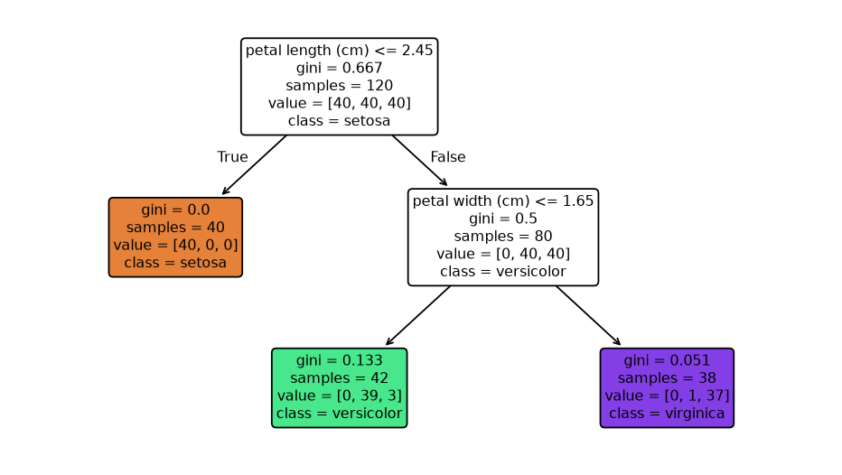
Take any node and unpack its four lines (left branch = test is True, right = False):
- the test at the top (e.g.
petal length (cm) <= 2.45) — the question this node asks; - gini — the node's impurity, straight from Section 2;
- samples — how many training samples reached this node;
- value — those samples' class distribution
[setosa, versicolor, virginica]; the majority class (also shown asclass=) is what the node would predict if it were a leaf.
Follow the root's left branch: every setosa in the training set has petal length ≤ 2.45 cm, so one
question yields a perfectly pure leaf (gini = 0.0). The right branch holds the two entangled species,
which the second question (on petal width) mostly separates. A botanist could check this logic line by
line — try doing that with logistic regression coefficients.
The decision boundary: rectangles all the way down
Each test compares one feature against one threshold, so each split draws a line perpendicular to a feature axis. Stacked tests carve the feature space into nested rectangles. Let's see it, using only the two petal measurements so we can plot the plane:
# Two features only, for a plottable 2-D feature space
X_petal = iris.data[:, [2, 3]] # petal length, petal width
tree_petal = DecisionTreeClassifier(max_depth=2, random_state=42).fit(X_petal, y_ir)
fig, ax = plt.subplots()
DecisionBoundaryDisplay.from_estimator(tree_petal, X_petal, response_method="predict",
multiclass_colors="Pastel2", ax=ax)
scatter = ax.scatter(X_petal[:, 0], X_petal[:, 1], c=y_ir, cmap="Dark2",
edgecolor="black", s=30)
ax.legend(scatter.legend_elements()[0], iris.target_names, title="Species")
ax.set_xlabel("Petal length (cm)")
ax.set_ylabel("Petal width (cm)")
ax.set_title("Decision tree boundary — axis-aligned rectangles")
plt.show()
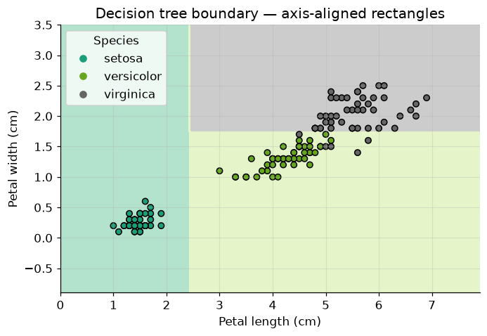
Compare this with logistic regression's single straight (possibly diagonal) line from last module: the tree's boundary is a set of axis-parallel fences. One vertical fence walls off setosa; one horizontal fence splits the remaining two species. Depth 2, two fences, three regions.
Now — what happens if we don't cap the depth at 2? The tree will keep fencing until every training point sits in a region of its own colour. Time to watch that go wrong.
5. Overfitting: the tree that memorized the noise
We'll stage the failure on a synthetic dataset small enough to see every point: 100 samples, 2 features,
3 classes, generated with make_classification (the same tool as the admission datasets last module) —
including its default sprinkle of label noise, just like real data.
X_syn, y_syn = make_classification(
n_samples=100, n_features=2, n_informative=2, n_redundant=0, n_repeated=0,
n_classes=3, n_clusters_per_class=1, class_sep=1.0, random_state=10)
X_train, X_test, y_train, y_test = train_test_split(
X_syn, y_syn, test_size=0.2, random_state=RANDOM_STATE)
plt.scatter(X_syn[:, 0], X_syn[:, 1], c=y_syn, cmap="Dark2", edgecolor="black", s=30)
plt.xlabel("$x_0$")
plt.ylabel("$x_1$")
plt.title("Synthetic data: 3 classes, some stragglers on the wrong side")
plt.show()
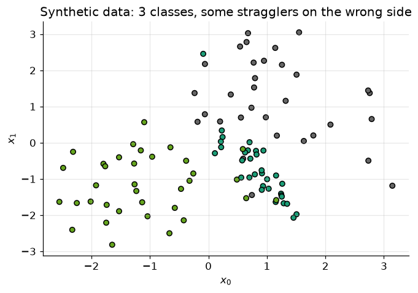
Three clouds with genuinely fuzzy borders — a few points sit deep inside a neighbouring class's territory. Keep an eye on those stragglers.
Fit a tree with all defaults — which, remember from Section 3, means grow until every leaf is pure:
tree_full = DecisionTreeClassifier(random_state=RANDOM_STATE)
tree_full.fit(X_train, y_train)
print(f"Tree depth: {tree_full.get_depth()}, leaves: {tree_full.get_n_leaves()}")
print(f"Training accuracy: {tree_full.score(X_train, y_train):.1%}")
print(f"Test accuracy: {tree_full.score(X_test, y_test):.1%}")
Tree depth: 9, leaves: 15
Training accuracy: 100.0%
Test accuracy: 85.0%
There's the signature: perfect on the training set, mediocre on the test set. The tree isn't generalizing — it's reciting. This is precisely the overfitting we met in the Regularization module, only the complexity dial isn't polynomial degree anymore; it's depth. And depth is an exponential dial: a binary tree of depth \(d\) can hold up to
so capacity roughly doubles with every extra level. Let's sweep the dial and watch both accuracies:
max_depth_range = range(1, 16)
clfs, train_acc, test_acc = [], [], []
for d in max_depth_range:
clf = DecisionTreeClassifier(max_depth=d, random_state=RANDOM_STATE)
clf.fit(X_train, y_train)
clfs.append(clf)
train_acc.append(clf.score(X_train, y_train))
test_acc.append(clf.score(X_test, y_test))
plt.plot(max_depth_range, train_acc, marker="o", label="training accuracy")
plt.plot(max_depth_range, test_acc, marker="s", label="test accuracy")
plt.xlabel("max_depth")
plt.ylabel("Accuracy")
plt.title("Accuracy vs. tree depth")
plt.legend()
plt.show()
best_d = max_depth_range[int(np.argmax(test_acc))]
print(f"Best test accuracy: {max(test_acc):.1%} at depth {best_d}")
print(f"Training accuracy saturates at 100% from depth {tree_full.get_depth()} "
f"(the tree can't grow further — every leaf is pure).")
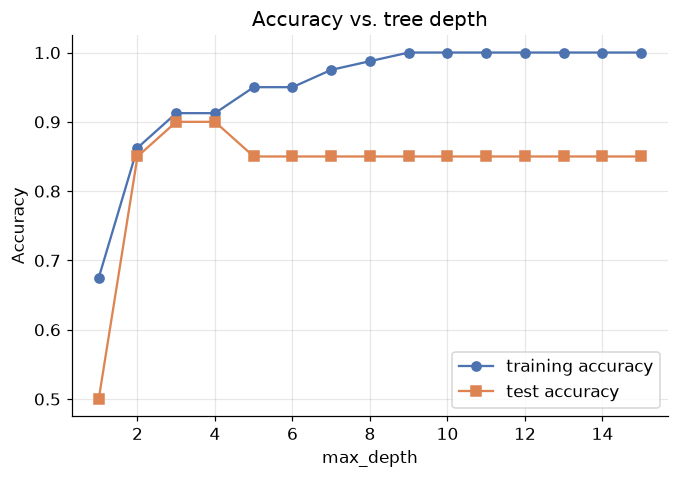
Best test accuracy: 90.0% at depth 3
Training accuracy saturates at 100% from depth 9 (the tree can't grow further — every leaf is pure).
Read the two curves like a diagnosis chart:
- Training accuracy climbs monotonically to 100% and pins there — more depth never hurts on data you're allowed to memorize.
- Test accuracy peaks early, at a shallow depth, then drifts down as depth grows. Every level beyond the peak buys training accuracy only, by fitting noise.
The widening gap between the curves is overfitting, made visible. And we can make it even more visible — let's draw the decision boundary at increasing depths and watch the fences multiply:
depths_to_show = [1, 2, 3, 5, 7, tree_full.get_depth()]
fig, axes = plt.subplots(2, 3, figsize=(13, 7.5), sharex=True, sharey=True)
for ax, d in zip(axes.ravel(), depths_to_show):
clf = DecisionTreeClassifier(max_depth=d, random_state=RANDOM_STATE).fit(X_train, y_train)
DecisionBoundaryDisplay.from_estimator(clf, X_train, response_method="predict",
multiclass_colors="Pastel2", ax=ax)
ax.scatter(X_train[:, 0], X_train[:, 1], c=y_train, cmap="Dark2",
edgecolor="black", s=18)
ax.set_title(f"max_depth = {d} (test acc {clf.score(X_test, y_test):.0%})")
ax.grid(False)
fig.suptitle("The decision boundary grows fences as the tree deepens", y=1.02)
plt.tight_layout()
plt.show()
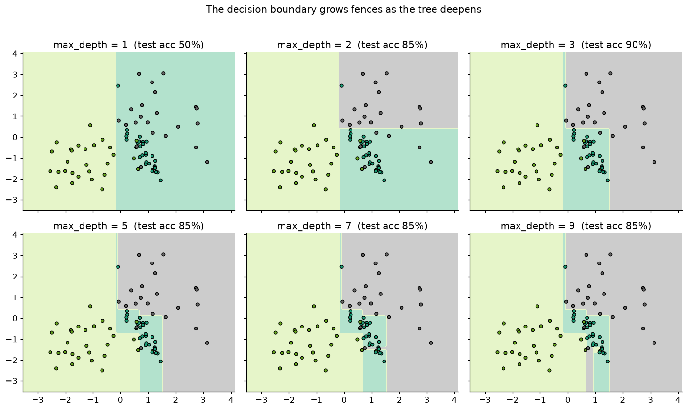
At depth 1 and 2 the regions are broad and sensible. By the final panel, the tree has carved tiny one-point enclaves deep inside foreign territory — a private rectangle for each straggler. Those stragglers sit at the fuzzy class borders; they are noise, or at best unrepeatable edge cases, and the tree has spent most of its depth budget building fences around them. New data will not repeat that noise, which is exactly why test accuracy fell.
There's a structural reason deep trees chase noise so readily: every split thins the data. Each level partitions the samples among more nodes, so decisions near the bottom rest on a handful of points — statistically flimsy evidence for any fence:
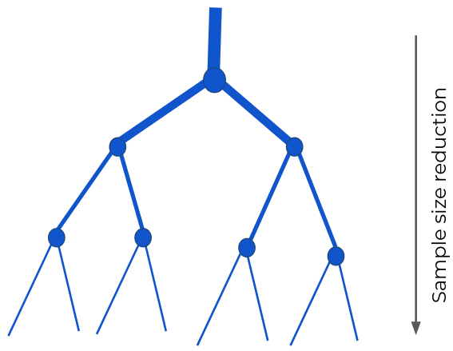
*Figure 7 — Sample size shrinks at every level; deep splits are decided by very few samples.*Occam's razor
Which depth should we keep, then? The accuracy sweep showed several depths sharing (or nearly sharing) the best test accuracy. Occam's razor — when multiple solutions perform alike, prefer the simplest — says take the shallowest of them. Simpler trees are cheaper, more interpretable, and rest their decisions on more samples per node.
Two families of techniques put this principle into practice:
- Early stopping (top-down): refuse to grow the tree past preset limits — Section 6.
- Pruning (bottom-up): grow the tree fully, then cut back the branches that don't pay their way — Section 8. (A third strategy — ensembles of trees, i.e. random forests — is a story for a future module.)
6. Early stopping: three brakes on growth
Early stopping bolts stopping criteria onto step 2 of the growing algorithm: make a leaf not only when
pure, but also when a growth budget runs out. DecisionTreeClassifier exposes each budget as a
constructor argument. We'll try the three classics on our synthetic data and watch both the tree
structure and the test accuracy respond. (Baseline to beat, from Section 5: the full tree's test
accuracy.)
Brake 1 — depth limitation (max_depth)
The bluntest brake: no path may exceed a fixed number of questions.
tree_depth3 = DecisionTreeClassifier(max_depth=3, random_state=RANDOM_STATE)
tree_depth3.fit(X_train, y_train)
fig, ax = plt.subplots(figsize=(10, 5), dpi=120)
plot_tree(tree_depth3, filled=True, rounded=True, fontsize=8,
feature_names=["x0", "x1"], ax=ax)
ax.grid(False)
plt.show()
print(f"Leaves: {tree_depth3.get_n_leaves()} (full tree had {tree_full.get_n_leaves()})")
print(f"Training accuracy: {tree_depth3.score(X_train, y_train):.1%}")
print(f"Test accuracy: {tree_depth3.score(X_test, y_test):.1%} "
f"(full tree: {tree_full.score(X_test, y_test):.1%})")
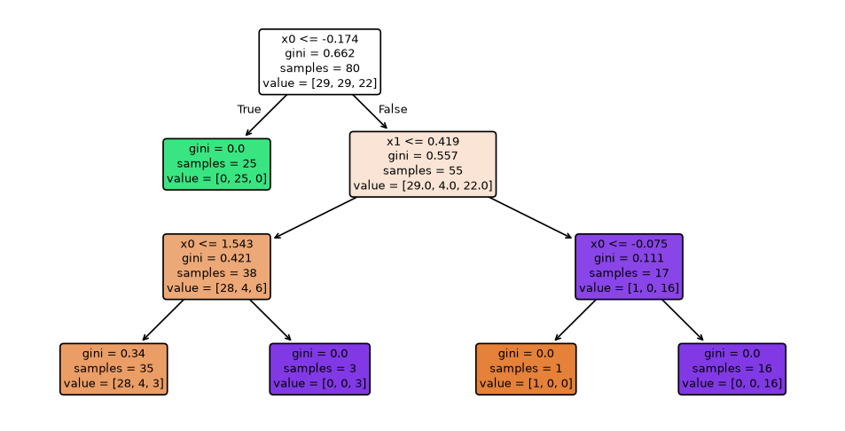
Leaves: 5 (full tree had 15)
Training accuracy: 91.2%
Test accuracy: 90.0% (full tree: 85.0%)
A third of the leaves, better test accuracy — the fences around the stragglers are gone and nothing of value was lost. But note the leaves that are still impure: the tree wanted to keep splitting and we cut it off mid-thought. Setting the number requires care: too low and the tree underfits; and there's no way to know the right value in advance.
Brake 2 — impurity threshold (min_impurity_decrease)
Subtler: allow a split only if it reduces impurity by at least a threshold. Splits with negligible payoff are refused, wherever in the tree they occur. The impurity reduction that scikit-learn computes for a node split is the weighted version from Section 2:
tree_impurity = DecisionTreeClassifier(min_impurity_decrease=0.1, random_state=RANDOM_STATE)
tree_impurity.fit(X_train, y_train)
fig, ax = plt.subplots(figsize=(7, 4), dpi=120)
plot_tree(tree_impurity, filled=True, rounded=True, fontsize=9,
feature_names=["x0", "x1"], ax=ax)
ax.grid(False)
plt.show()
print(f"Leaves: {tree_impurity.get_n_leaves()}")
print(f"Training accuracy: {tree_impurity.score(X_train, y_train):.1%}")
print(f"Test accuracy: {tree_impurity.score(X_test, y_test):.1%}")
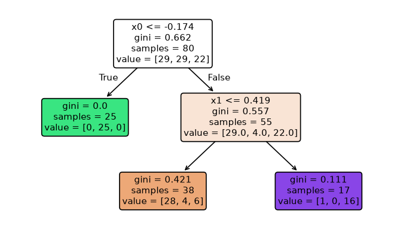
Leaves: 3
Training accuracy: 86.2%
Test accuracy: 85.0%
Only the splits that pay ≥ 0.1 in impurity reduction survived — a very small tree. The remaining impure leaves wanted to split, but each candidate split offered less than the threshold, so growth stopped there.
Brake 3 — minimum samples to split (min_samples_split)
Attack the Figure-7 problem directly: refuse to split thin nodes. If a node holds fewer than the minimum, it becomes a leaf regardless of purity — decisions must rest on a respectable amount of evidence.
tree_minsamples = DecisionTreeClassifier(min_samples_split=10, random_state=RANDOM_STATE)
tree_minsamples.fit(X_train, y_train)
fig, ax = plt.subplots(figsize=(10, 5), dpi=120)
plot_tree(tree_minsamples, filled=True, rounded=True, fontsize=8,
feature_names=["x0", "x1"], ax=ax)
ax.grid(False)
plt.show()
print(f"Leaves: {tree_minsamples.get_n_leaves()}")
print(f"Training accuracy: {tree_minsamples.score(X_train, y_train):.1%}")
print(f"Test accuracy: {tree_minsamples.score(X_test, y_test):.1%}")
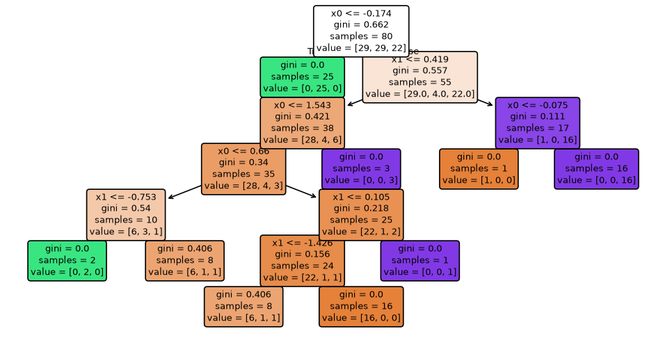
Leaves: 9
Training accuracy: 95.0%
Test accuracy: 85.0%
The tiny nodes (fewer than 10 samples) stopped splitting; note this brake has no direct grip on depth — a well-populated branch may still grow deep.
The catch, in all three cases
Every brake needed a number — 3, 0.1, 10 — and we set each before training, essentially by guessing.
Set it too aggressive and the tree underfits; too lenient and overfitting returns. On this dataset,
max_depth=3 happened to work nicely — but we only know that because we peeked at test accuracy
afterwards. Worse, early stopping has a structural blind spot, which the next section demonstrates with a
famously nasty four-point dataset.
7. When early stopping fails: the XOR problem
The XOR (exclusive-or) dataset is four points: the label is 1 when exactly one of the two features is 1.
| \(x_1\) | \(x_2\) | \(y\) |
|---|---|---|
| 0 | 0 | 0 |
| 0 | 1 | 1 |
| 1 | 0 | 1 |
| 1 | 1 | 0 |
The trap: no single split helps. Cut on \(x_1\) (or \(x_2\)) and each child still holds one 0 and one 1 — impurity doesn't budge. The first question is worthless on its own; it only pays off in combination with the second. Watch what an impurity-threshold brake does here — we demand a tiny minimum reduction of just 0.01:
# The XOR dataset
X_xor = np.array([[0, 0], [0, 1], [1, 0], [1, 1]])
y_xor = np.array([0, 1, 1, 0])
tree_xor_stopped = DecisionTreeClassifier(min_impurity_decrease=0.01, random_state=RANDOM_STATE)
tree_xor_stopped.fit(X_xor, y_xor)
fig, ax = plt.subplots(figsize=(3.5, 2.5), dpi=120)
plot_tree(tree_xor_stopped, filled=True, rounded=True, fontsize=10,
feature_names=["x1", "x2"], ax=ax)
ax.grid(False)
plt.show()
print(f"Nodes: {tree_xor_stopped.tree_.node_count} — the tree refused to grow at all.")
print(f"Training accuracy: {tree_xor_stopped.score(X_xor, y_xor):.0%}")
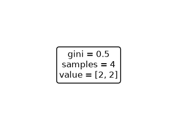
Nodes: 1 — the tree refused to grow at all.
Training accuracy: 50%
A single node — a stump. The first split reduces impurity by (essentially) zero, that's below our threshold, so the brake slammed on at the root. The model predicts one class for everything: coin-flip accuracy on a dataset that is perfectly learnable. Remove the brake:
tree_xor_full = DecisionTreeClassifier(random_state=RANDOM_STATE)
tree_xor_full.fit(X_xor, y_xor)
fig, ax = plt.subplots(figsize=(6, 4), dpi=120)
plot_tree(tree_xor_full, filled=True, rounded=True, fontsize=9,
feature_names=["x1", "x2"], ax=ax)
ax.grid(False)
plt.show()
print(f"Nodes: {tree_xor_full.tree_.node_count}")
print(f"Training accuracy: {tree_xor_full.score(X_xor, y_xor):.0%}")
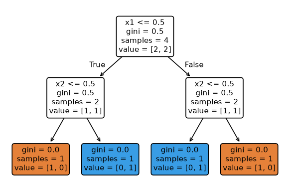
Nodes: 7
Training accuracy: 100%
Allowed to make that first "useless" split, the tree solves XOR perfectly two levels later. Look at the root's children: the first split bought zero impurity reduction, exactly as predicted — but it set up the second round of splits that finish the job.
This is the horizon effect: early stopping judges each split by its immediate payoff, but some splits only pay off one level beyond the horizon. A greedy brake can't see that far. The remedy is to stop judging splits on the way down, and instead judge finished subtrees on the way back up: grow the whole tree first, then remove the parts that didn't earn their keep. That is pruning.
8. Pruning: grow first, cut later
Pruning inverts early stopping's philosophy. Grow the tree to its entirety — noise fences, XOR detours and all — then remove the branches that don't justify their complexity. Because judgment happens after the fact, a branch that looked useless at birth (XOR's first split) but proved essential gets kept, while a branch that fenced one noisy point gets cut.
Of the several pruning techniques in the literature (reduced-error pruning, minimum-error pruning, error-based pruning…), we focus on the most widely used — the one scikit-learn implements: cost-complexity pruning, from the CART family.
The idea: put a price on leaves
Cost-complexity pruning scores a tree \(T\) by its error plus rent on its size:
where \(R(T)\) is the tree's total impurity-weighted error on the training data, \(|T|\) is its number of leaves, and \(\alpha \geq 0\) is the price per leaf. If this looks familiar, it should — it is exactly the regularization pattern from the Regularization module: \(\text{cost} = \text{fit} + \lambda \cdot \text{complexity}\), with leaves in place of coefficients.
- \(\alpha = 0\): leaves are free → the fully grown tree wins.
- \(\alpha \to \infty\): leaves are ruinous → a single-node stump wins.
- In between, each \(\alpha\) picks out one best sub-tree.
The weakest link
Which branch goes first as \(\alpha\) rises? For each internal node \(t\), ask: how much error does its subtree save us, per extra leaf it costs? The break-even price is
where \(R(t)\) is the error if node \(t\) were collapsed to a leaf, and \(R(T_t)\), \(|T_t|\) are the error and leaf-count of the subtree hanging from \(t\). The node with the smallest \(\alpha_{\text{eff}}\) — the weakest link — is the worst deal in the tree, and is pruned first. Collapsing weakest links one after another produces a nested sequence of ever-simpler trees:
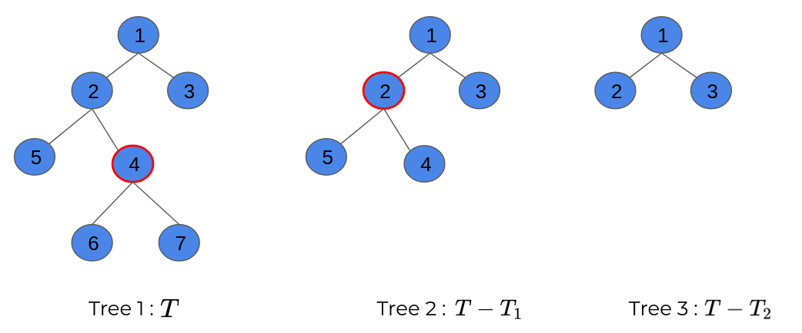
*Figure 8 — Sequential pruning: collapse the weakest link (red), rescore, repeat, down to the root.*A worked \(\alpha_{\text{eff}}\). Take the subtree below (from a tree trained on 80 samples), rooted at node #4:
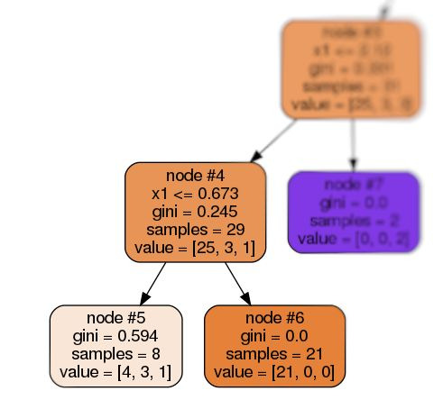
*Figure 9 — A candidate for pruning: node #4 and its two leaves.*With impurity-weighted error \(R = \text{gini} \times \frac{\text{samples}}{\text{total}}\):
- Collapsed: \(R(t) = 0.245 \times \frac{29}{80} \approx 0.0888\)
- Kept: \(R(T_t) = \underbrace{0.594 \times \tfrac{8}{80}}_{\text{node \#5}} + \underbrace{0.0 \times \tfrac{21}{80}}_{\text{node \#6}} \approx 0.0594\), with \(|T_t| = 2\) leaves
If the price per leaf rises above 0.0294, this subtree stops being worth its rent and is collapsed.
Doing it in scikit-learn
cost_complexity_pruning_path runs the weakest-link procedure and returns every break-even \(\alpha\) —
the full menu of candidate trees. The parameter ccp_alpha then trains a tree pruned at a given price:
tree_for_path = DecisionTreeClassifier(random_state=RANDOM_STATE)
path = tree_for_path.cost_complexity_pruning_path(X_train, y_train)
ccp_alphas = path.ccp_alphas
print("Break-even alphas (one per candidate tree):")
print(np.round(ccp_alphas, 5))
Break-even alphas (one per candidate tree):
[0. 0.01071 0.0125 0.01272 0.01562 0.02036 0.02353 0.05143 0.1592
0.27884]
# One tree per alpha, scored on train and test
pruned_trees = [DecisionTreeClassifier(random_state=RANDOM_STATE, ccp_alpha=a).fit(X_train, y_train)
for a in ccp_alphas]
train_scores = [t.score(X_train, y_train) for t in pruned_trees]
test_scores = [t.score(X_test, y_test) for t in pruned_trees]
plt.step(ccp_alphas, train_scores, marker="o", where="post", label="training accuracy")
plt.step(ccp_alphas, test_scores, marker="s", where="post", label="test accuracy")
plt.xlabel(r"ccp_alpha (price per leaf, $\alpha$)")
plt.ylabel("Accuracy")
plt.title("Cost-complexity pruning: accuracy along the pruning path")
plt.legend()
plt.show()
for a, t, tr, te in zip(ccp_alphas, pruned_trees, train_scores, test_scores):
print(f"alpha={a:.4f} leaves={t.get_n_leaves():2d} depth={t.get_depth()} "
f"train={tr:.2f} test={te:.2f}")
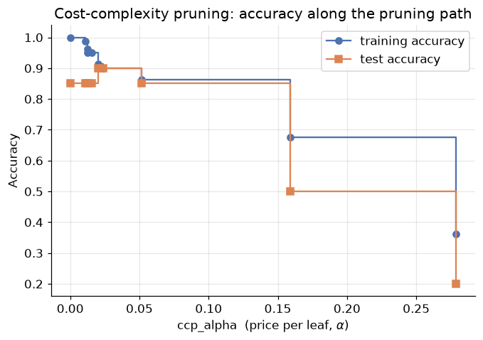
alpha=0.0000 leaves=15 depth=9 train=1.00 test=0.85
alpha=0.0107 leaves=13 depth=8 train=0.99 test=0.85
alpha=0.0125 leaves=11 depth=7 train=0.96 test=0.85
alpha=0.0127 leaves= 9 depth=6 train=0.95 test=0.85
alpha=0.0156 leaves= 8 depth=5 train=0.95 test=0.85
alpha=0.0204 leaves= 5 depth=3 train=0.91 test=0.90
alpha=0.0235 leaves= 4 depth=3 train=0.90 test=0.90
alpha=0.0514 leaves= 3 depth=2 train=0.86 test=0.85
alpha=0.1592 leaves= 2 depth=1 train=0.68 test=0.50
alpha=0.2788 leaves= 1 depth=0 train=0.36 test=0.20
Read the table right to left is also instructive, but the headline reads left to right: as \(\alpha\) rises, leaves fall away, training accuracy erodes gently — and test accuracy actually climbs before collapsing when pruning starts amputating real structure. The best test accuracy is shared by more than one \(\alpha\); Occam's razor says take the largest of them (the smallest tree). Let's select it programmatically and look at the survivor:
best = max(range(len(ccp_alphas)),
key=lambda i: (test_scores[i], ccp_alphas[i])) # best test acc, ties -> larger alpha
best_alpha = ccp_alphas[best]
tree_pruned = pruned_trees[best]
print(f"Chosen alpha: {best_alpha:.4f}")
print(f"Pruned tree: {tree_pruned.get_n_leaves()} leaves, depth {tree_pruned.get_depth()} "
f"(full tree: {tree_full.get_n_leaves()} leaves, depth {tree_full.get_depth()})")
print(f"Test accuracy: {tree_pruned.score(X_test, y_test):.1%} "
f"(full tree: {tree_full.score(X_test, y_test):.1%})")
fig, ax = plt.subplots(figsize=(8, 4.5), dpi=120)
plot_tree(tree_pruned, filled=True, rounded=True, fontsize=9,
feature_names=["x0", "x1"], ax=ax)
ax.grid(False)
plt.show()
Chosen alpha: 0.0235
Pruned tree: 4 leaves, depth 3 (full tree: 15 leaves, depth 9)
Test accuracy: 90.0% (full tree: 85.0%)
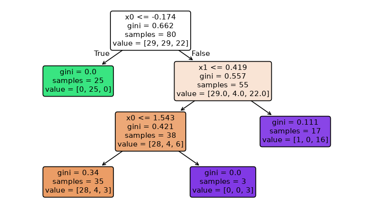
From fifteen leaves to a handful, and better test accuracy. Compare how we got here with Section 6:
early stopping asked us to guess magic numbers before training; pruning derived its candidate
\(\alpha\) values from the tree itself and let held-out accuracy pick among them. That is why pruning —
specifically cost-complexity pruning with the \(\alpha\) grid from cost_complexity_pruning_path — is the
standard recommendation. (In a production workflow you'd pick \(\alpha\) on a validation split or by
cross-validation, keeping the test set untouched for the final report — the protocol from the ML Workflow
module.)
9. A short history: ID3, C4.5, CART
"Decision tree" is a family, not a single algorithm. The members — called inducers — differ in which impurity metric they optimize, what data they accept, and how they fight overfitting. Three names matter:
- ID3 (Iterative Dichotomiser 3, Ross Quinlan): the original. Splits on information gain, multiway splits on categorical attributes only, no pruning — so it inherits both of information gain's flaws we met in Section 2 (the ID-column bias) and this module's disease (overfitting).
- C4.5 (Quinlan again): the fix-up release. Splits on gain ratio (Section 2's correction), handles continuous attributes by thresholding them, tolerates missing values, and prunes (error-based pruning).
- CART (Classification and Regression Trees, Breiman et al.): strictly binary splits, Gini
(classification) or MSE/variance (regression), cost-complexity pruning — Section 8. Because it
covers regression too, it is the most versatile, and it is the algorithm behind scikit-learn's
DecisionTreeClassifierandDecisionTreeRegressor(an optimized version of it).
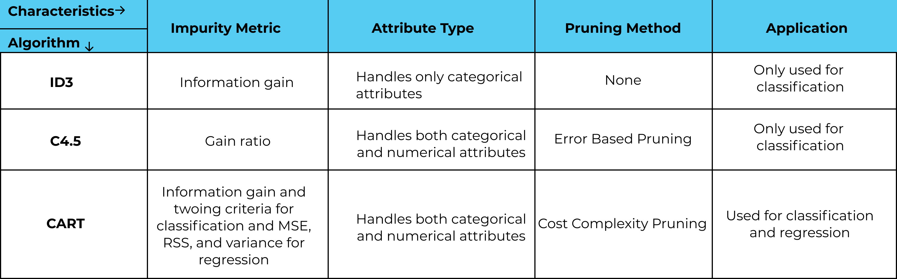
*Figure 10 — The three classic inducers at a glance.*(That "CART builds binary trees" detail explains a curiosity from Section 7: on the XOR data, the learned thresholds appear as \(x_1 \le 0.5\) even though the feature only takes values 0 and 1 — CART always cuts a continuous range at a midpoint between observed values.)
10. Finishing the evaluation toolkit
Last module gave us the confusion matrix, precision, recall, and F1 — for two classes and a fixed threshold. Both restrictions come off now.
10.1 The confusion matrix goes multiclass
For \(K\) classes the confusion matrix is \(K \times K\); here is one for a hypothetical fruit classifier:
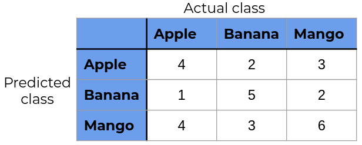
*Figure 11 — A 3-class confusion matrix (columns: actual, rows: predicted). The diagonal holds the correct predictions.*TP, FP, FN, TN are now defined per class. For the class Apple: TP is the Apple-Apple cell; FP is the rest of Apple's predicted row (called Apple, was something else); FN is the rest of Apple's actual column (was Apple, called something else); TN is everything remaining:
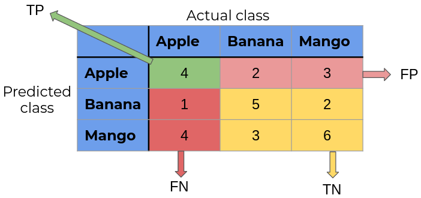
*Figure 12 — TP / FP / FN / TN from the class Apple's point of view.*With per-class TP/FP/FN in hand, precision, recall, and F1 follow for each class exactly as in the binary case:
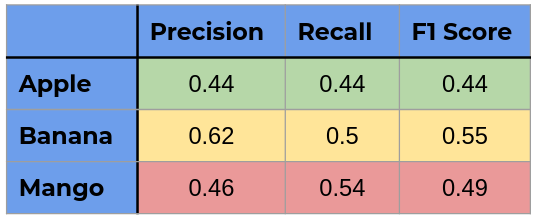
*Figure 13 — Per-class precision, recall, and F1 for the fruit classifier.*Three F1 scores for three classes — but a leaderboard needs one number. Three standard ways to average (imagine 1000 classes and the need becomes obvious):
- Macro F1 — the plain mean of per-class F1 scores. Every class counts equally, so rare classes weigh as much as common ones.
- Weighted F1 — the mean weighted by each class's number of true instances (support). Big classes dominate.
- Micro F1 — pool TP, FP, FN over all classes first, then compute F1 from the totals. For single-label classification this equals plain accuracy.
Scikit-learn exposes all three through the average parameter — and its classification_report (which we
read for two classes last module) simply grows one row per class. Let's evaluate our pruned iris tree
properly:
y_ir_pred = tree_iris.predict(X_ir_test)
print(classification_report(y_ir_test, y_ir_pred, target_names=iris.target_names))
for avg in ["macro", "weighted", "micro"]:
print(f"{avg:>9} F1: {f1_score(y_ir_test, y_ir_pred, average=avg):.4f}")
print(f"{'accuracy':>9} : {accuracy_score(y_ir_test, y_ir_pred):.4f} (= micro F1)")
precision recall f1-score support
setosa 1.00 1.00 1.00 10
versicolor 0.90 0.90 0.90 10
virginica 0.90 0.90 0.90 10
accuracy 0.93 30
macro avg 0.93 0.93 0.93 30
weighted avg 0.93 0.93 0.93 30
macro F1: 0.9333
weighted F1: 0.9333
micro F1: 0.9333
accuracy : 0.9333 (= micro F1)
On iris the three averages barely differ, because the classes are balanced and similarly easy. They diverge on imbalanced problems: macro F1 punishes a model that dumps its rare classes; weighted F1 forgives it. Choose deliberately — it is the multiclass version of last module's "metric choice is a modelling decision".
10.2 Metrics across all thresholds: PR curves, ROC, and AUC
Every metric so far was computed at one threshold (0.5 by default). But last module's Exercise 2 showed the threshold is a free dial: lower it and recall rises while precision falls; raise it and the reverse. One threshold = one (precision, recall) pair:
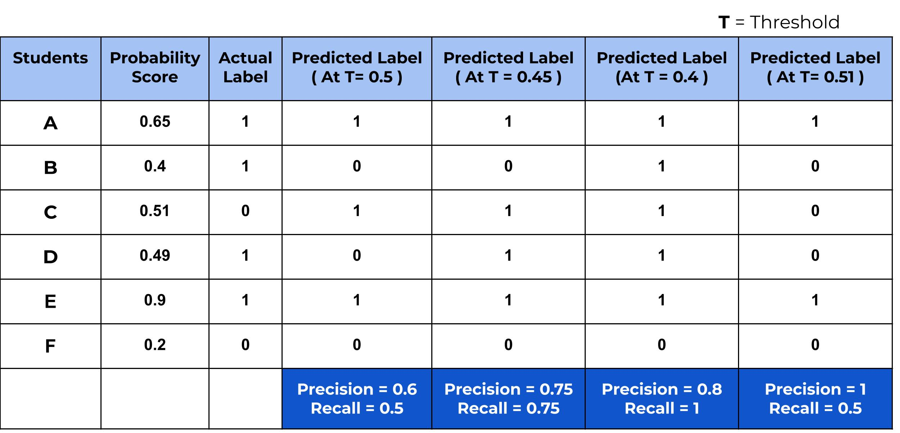
*Figure 14 — Six students, four thresholds: each threshold yields a different precision/recall pair.*Sweep the threshold over its whole range, plot every pair, and you get the precision–recall curve — the complete menu of trade-offs a classifier offers. The closer it hugs the top-right corner (precision and recall high), the better the classifier:
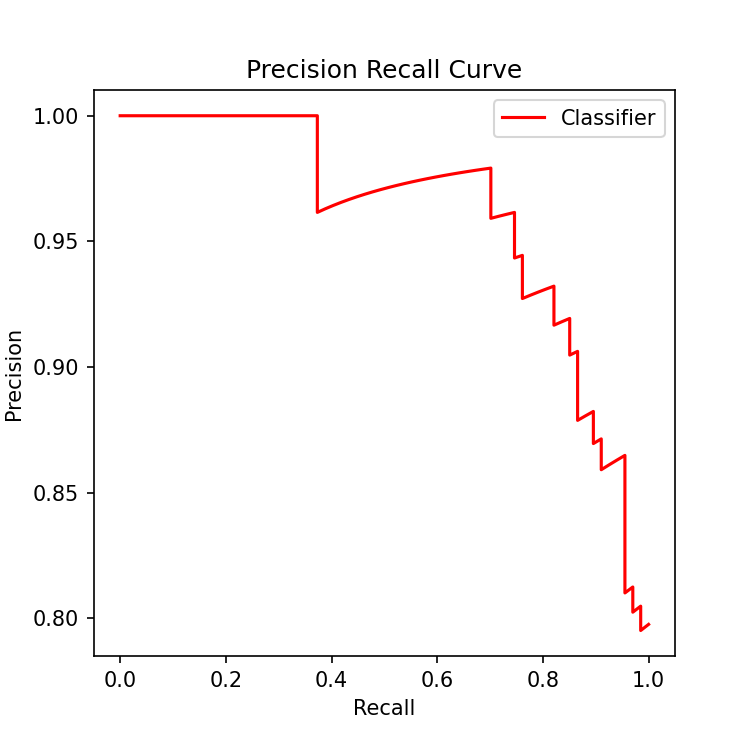
*Figure 15 — A typical precision–recall curve; each point is one threshold.*The ROC curve (Receiver Operating Characteristic) applies the same sweep to a different pair of axes:
— the benefit (catching positives) against the collateral damage (false alarms among the negatives). Three reference shapes to calibrate your eye:
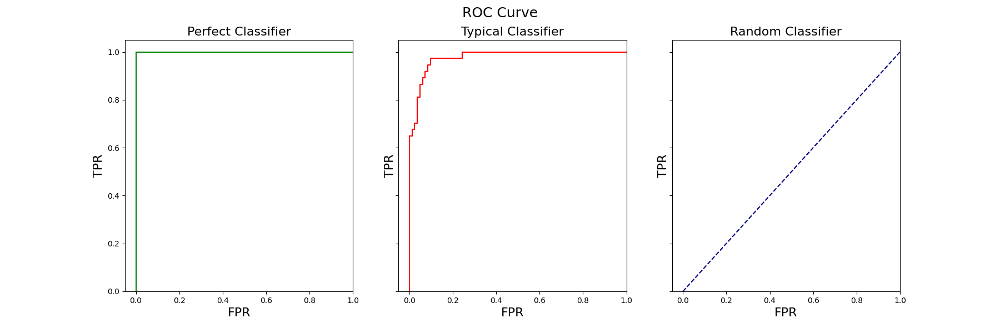
*Figure 16 — ROC curves: a perfect classifier hugs the top-left corner; a random one lies on the diagonal; real classifiers live in between.*Squashing the whole curve into one number gives the AUC (Area Under the Curve): 1.0 for a perfect classifier, 0.5 for coin-flipping. AUC measures ranking quality across all thresholds at once, which makes it ideal for comparing models before you've committed to an operating point.
10.3 The rematch: decision tree vs. logistic regression
Let's put the module together. Same diabetes data as last module, two challengers — our new pruned tree against the reigning logistic regression — judged on ROC curves and AUC:
X_diab = diabetes.drop("Outcome", axis=1)
y_diab = diabetes["Outcome"]
Xd_train, Xd_test, yd_train, yd_test = train_test_split(
X_diab, y_diab, test_size=0.3, random_state=42)
# Challenger 1: logistic regression (scaled, as always)
logreg_diab = make_pipeline(StandardScaler(), LogisticRegression())
logreg_diab.fit(Xd_train, yd_train)
# Challenger 2: a cost-complexity-pruned decision tree (alpha chosen on the training data's path)
path_d = DecisionTreeClassifier(random_state=RANDOM_STATE).cost_complexity_pruning_path(Xd_train, yd_train)
tree_diab = DecisionTreeClassifier(random_state=RANDOM_STATE,
ccp_alpha=0.005) # a mid-path value; tune it in Exercise 5
tree_diab.fit(Xd_train, yd_train)
fig, ax = plt.subplots()
RocCurveDisplay.from_estimator(logreg_diab, Xd_test, yd_test, name="Logistic regression", ax=ax)
RocCurveDisplay.from_estimator(tree_diab, Xd_test, yd_test, name="Pruned decision tree", ax=ax)
ax.plot([0, 1], [0, 1], "k--", linewidth=1, label="Random classifier")
ax.set_title("ROC curves — diabetes test set")
ax.legend()
plt.show()
for name, model in [("Logistic regression", logreg_diab), ("Pruned decision tree", tree_diab)]:
auc = roc_auc_score(yd_test, model.predict_proba(Xd_test)[:, 1])
print(f"{name:<22} AUC = {auc:.3f}")
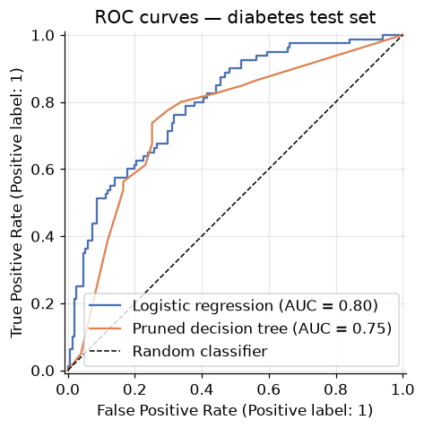
Logistic regression AUC = 0.798
Pruned decision tree AUC = 0.752
Both classifiers sit well above the random diagonal, with logistic regression's smooth probability ranking typically edging out the tree's chunkier one (a tree only outputs as many distinct probability values as it has leaves — hence its staircase ROC). The precision–recall view tells the same story with an imbalanced-data accent:
fig, ax = plt.subplots()
PrecisionRecallDisplay.from_estimator(logreg_diab, Xd_test, yd_test, name="Logistic regression", ax=ax)
PrecisionRecallDisplay.from_estimator(tree_diab, Xd_test, yd_test, name="Pruned decision tree", ax=ax)
ax.set_title("Precision-recall curves — diabetes test set")
plt.show()
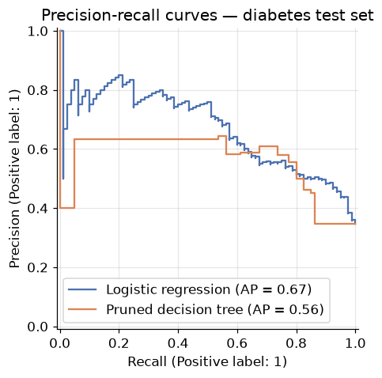
So which model should a clinic deploy? The AUC verdict favours one; but the tree can be printed on one page and audited by a doctor, gets no benefit from feature scaling (its thresholds are scale-invariant — notice we never scaled its inputs), and handles the mixed-scale features natively. Model choice, like metric choice, is a decision about what matters in the domain — you now have the tools to make both honestly.
11. Your turn
Add cells below each exercise. Exercises 3 and 5 consolidate the big ideas.
Exercise 1 — The other question. In the Section 2 loan example, compute the information gain for splitting on Is Married (row 1 goes one way, rows 2–4 the other). Compare with the Is House Owner gain we computed. Which question should the tree ask first?
Exercise 2 — Gini vs. entropy, empirically.
Refit the Section 5 full tree with criterion="entropy" and compare depth, leaf count, and test accuracy
against the Gini default. Do the two impurity metrics disagree much here?
Exercise 3 — The overfitting autopsy.
Take the full tree from Section 5 and find a leaf with samples = 1 (use the tree plot, or explore
tree_full.tree_.n_node_samples). Locate that training point in the scatter plot. Is it a straggler inside
another class's territory? Explain in two sentences why the pruned tree of Section 8 classifies that
region differently — and why that's a good thing.
Exercise 4 — Regression trees exist too.
Load the Advertising data from the Regression module (data/Advertising.csv) and fit a
DecisionTreeRegressor (criterion: MSE) predicting sales from TV spend, with max_depth 2, 5, and None.
Plot the three prediction curves over a scatter of the data. Where does the regression version of
overfitting show up?
Exercise 5 — Prune the diabetes tree properly.
In Section 10.3 we set ccp_alpha=0.005 by fiat. Do it right: split the training data further into
train/validation, evaluate every alpha from cost_complexity_pruning_path on the validation split, select
the winner Occam-style, and report the final model's AUC on the untouched test set. Did the rematch verdict
change?
12. If you remember nothing else
-
A decision tree classifies by routing: a cascade of one-feature threshold tests from root to leaf. Its boundary is axis-aligned rectangles; its superpower is that humans can read the fitted model.
-
Impurity is the currency of tree-growing. Gini (\(1 - \sum P_i^2\)) and entropy (\(-\sum P_i \log_2 P_i\)) are both zero for pure nodes and maximal at even mixing; splits are chosen to maximize the (weighted) impurity drop. Gain ratio divides by split information to stop many-valued attributes from cheating. Regression trees swap in MSE.
-
Fully grown trees overfit, structurally. Node capacity doubles per level (\(2^{d+1}-1\)), samples per node shrink per level, and growth stops only at purity — so noise gets a private fence. Signature: perfect training accuracy, decaying test accuracy.
-
Early stopping (
max_depth,min_impurity_decrease,min_samples_split) is guesswork set before training, and its greedy horizon is blind to splits that pay off later — XOR defeats it at the root. -
Cost-complexity pruning grows fully, then charges rent per leaf (\(R_\alpha = R + \alpha|T|\) — the regularization pattern again), collapsing weakest links to build an \(\alpha\)-indexed menu of subtrees; pick by held-out accuracy, break ties with Occam's razor.
-
ID3 → C4.5 → CART: information gain → gain ratio → Gini/MSE with binary splits and cost-complexity pruning. Scikit-learn's trees are optimized CART.
-
Multiclass F1 comes in macro / weighted / micro flavours (equal-class, size-weighted, pooled — micro = accuracy); PR and ROC curves show a classifier at every threshold, and AUC condenses ranking quality into one comparable number: 1.0 perfect, 0.5 random.
13. Further reading and glossary
Further reading
- Tan, Steinbach, Karpatne & Kumar, Introduction to Data Mining — Chapter 4 (PDF): decision trees, impurity metrics, and model evaluation in depth.
- Rokach & Maimon, Decision Trees (PDF) — the survey chapter: inducers (§8) and the full menagerie of pruning techniques (§6).
- scikit-learn's Decision Trees guide — including §"Tips on practical use" and minimal cost-complexity pruning.
- Terence Parr & Prince Grover, How to visualize decision trees — beautiful and instructive tree renderings.
- Aurélien Géron, Hands-On Machine Learning — Chapter 6 (trees, CART, regularization hyperparameters) and Chapter 3 (ROC/AUC, PR curves).
Glossary
| Term | Meaning |
|---|---|
| Root / internal / leaf node | First test / subsequent tests / terminal verdict of a tree |
| Depth | Longest root-to-leaf path; capacity grows as \(2^{d+1}-1\) nodes |
| Impurity | How mixed a node's classes are; 0 = pure |
| Gini impurity | \(1-\sum P_i^2\); scikit-learn's default split criterion |
| Entropy / information gain | \(-\sum P_i\log_2 P_i\); gain = entropy drop from a split |
| Gain ratio | Information gain ÷ split information; C4.5's fix for many-valued attributes |
| Recursive partitioning | Greedy grow-split-recurse algorithm behind all tree inducers |
| Early stopping | Pre-set growth limits (depth, impurity threshold, min samples) |
| Horizon effect | Greedy stopping misses splits whose payoff comes a level later (XOR) |
| Cost-complexity pruning | Grow fully, then minimize \(R(T)+\alpha\lvert T\rvert\); CART's pruning |
| Weakest link | Node with smallest \(\alpha_{\text{eff}}\); pruned first as \(\alpha\) rises |
| Occam's razor | Among equally good models, prefer the simplest |
| ID3 / C4.5 / CART | The classic inducers; sklearn implements optimized CART |
| Macro / weighted / micro F1 | Averaging schemes for multiclass F1 (micro = accuracy) |
| ROC curve / AUC | TPR vs. FPR across all thresholds / area under it (1 perfect, 0.5 random) |
| Precision-recall curve | Precision vs. recall across all thresholds |